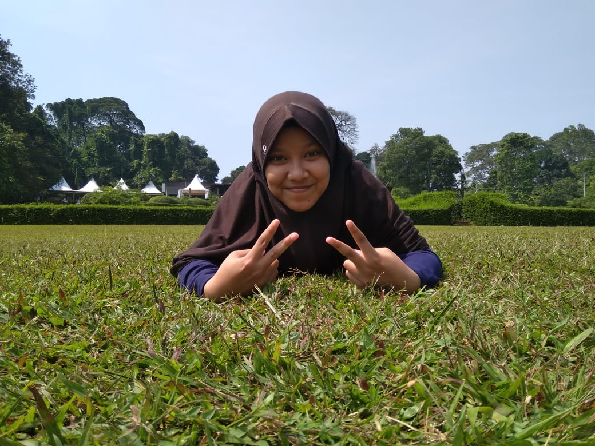

Aura Ratu Aulia
Arti nama : Pancaran seorang wanita yang tertinggi atau dimuliakan
Tentang Saya
- Tempat Tanggal Lahir : Bekasi, 5 Maret 2004
- Agama : Islam
- Jenis Kelamin : Perempuan
- Golongan Darah : AB+
- Alamat : Jl Cempaka, Perum. Mega Regency Blok C16 No.31
- Kewarganegaraan : WNI
- Status : Belum Menikah
- Pekeerjaan : Pelajar
- Makanan Favorit : Bakso, Sop ceker, Nasi goreng seafood
- Minuman Favorit : Es teh manis, Jus mangga
- Hobi : Membaca novel, Olahraga
- Cita-cita : Analis kimia, Dokter, Pengusaha
Riwayat Pendidikan
- TK Islam An-Naafi, Serang Baru
- SD Islam Al-Mu'min, Serang Baru
- SMP Negeri 1 Cikarang Selatan, Cikarang Selatan
- SMK-SMAK Bogor, Bogor (masih menjadi pelajar)
- Halo teman-teman, perkenalkan nama saya Aura Ratu Aulia. Biasa dipanggil Aura. Saya lahir di Bekasi. Saya anak kedua dari dua bersaudara. Kakak saya laki-laki. Hobi saya membaca novel. Novel favorit saya berjudul "Noda Pada Gadis Kecil Itu" karya Dre Kalfa. Film favorit saya bergenre komedi dan thriller. Saya sedang bersekolah di SMK-SMAK Bogor. Jadi saya merantau dari Bekasi ke Bogor yang sering hujan ini.
Waktu TK, cita-cita saya adalah dokter. Saat SD cita-citaku ingin jadi atlet taekwondo. Kemudian, ketika SMP cita-citaku ingin menjadi dokter hewan atau dokter spesialis penyakit dalam. Tetapi, cita-citaku setelah masuk SMAKBO adalah analis kimia. Ini foto saya!
